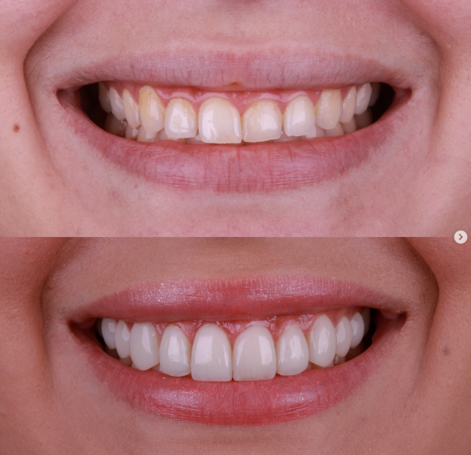
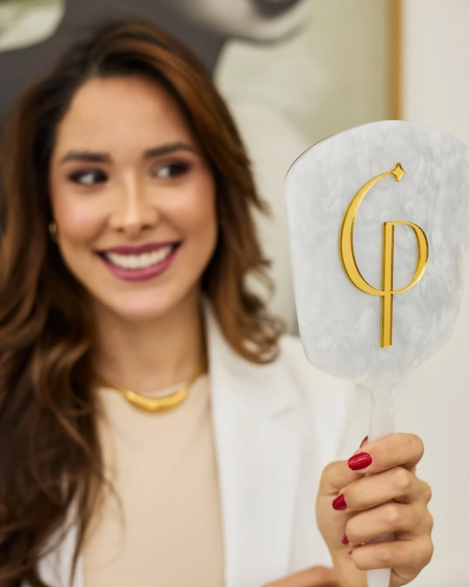
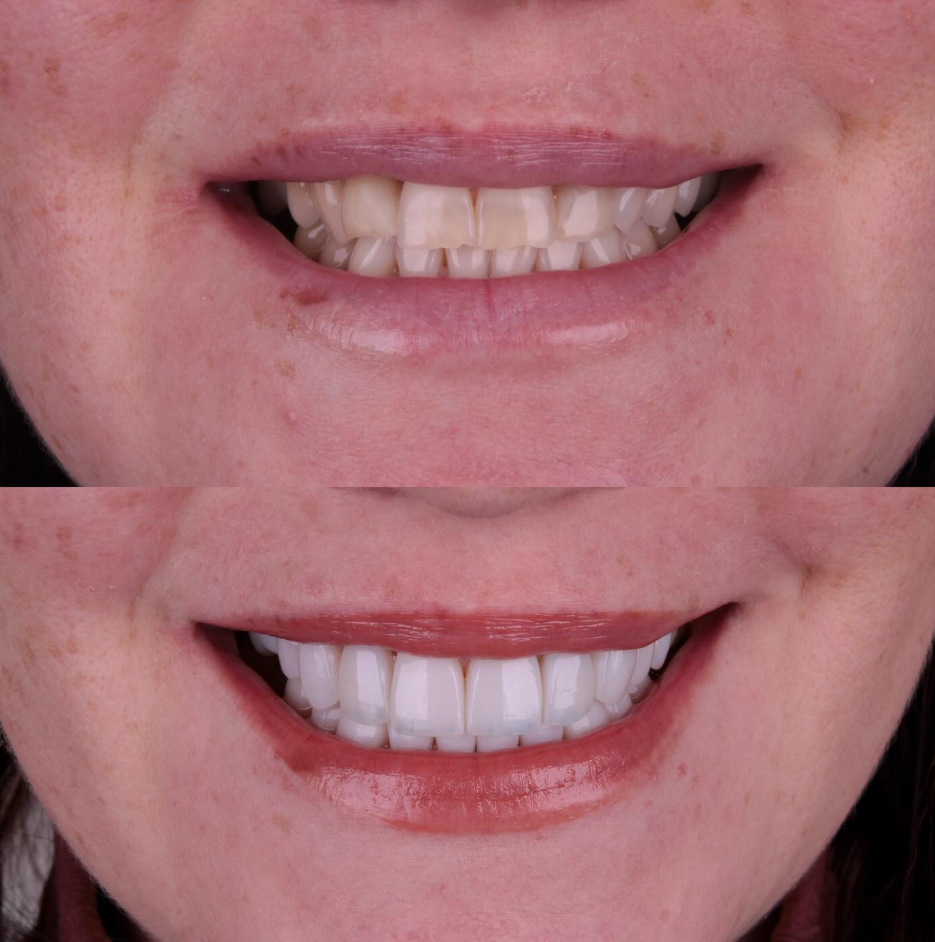
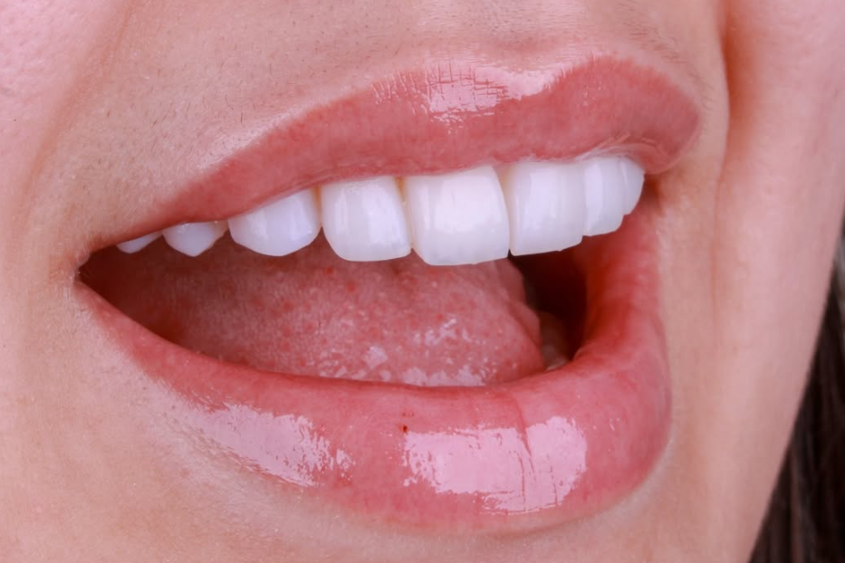

01
Equilíbrio que se revelaCor e proporção em harmonia
UM SORRISO COM A SUA ESSÊNCIA
Um sorriso natural, pensado em cada detalhe.
Lentes em resina com a sensibilidade e a precisão
da Dra. Carmen Pitol.
Com os seus traços. Com a sua história. Com o que faz você se sentir bem. Cada sorriso é planejado individualmente para revelar uma beleza que já é sua.
Harmonia.
Naturalidade.
Identidade.

O MOMENTO DE SE RECONHECER.Esculpidas à mão, com um olhar atento à cor, ao formato e à textura. As lentes Lumini valorizam os detalhes que tornam o seu sorriso único.
Seus desejos e a saúde do seu sorriso orientam cada escolha.
Cor, proporção e acabamento em harmonia com o seu rosto.
Uma abordagem individual, que busca preservar seus dentes.
02 / TRANSFORMAÇÕES REAIS
Pequenos detalhes. Uma nova harmonia.
Deslize e descubra cada transformação.


Cada sorriso é único. A indicação e os resultados dependem do planejamento individual.
Vamos conversar sobre o seu?
UM NOVO OLHAR PARA O SEU REFLEXO
O detalhe é no sorriso.
A diferença é em você.
03 / QUEM CUIDA DE VOCÊ
Acredito que um sorriso bonito é aquele em que você se reconhece.
Desde 2013, a Dra. Carmen Pitol dedica seu trabalho à odontologia e ao cuidado individual de cada paciente. Em Balneário Camboriú, reúne planejamento, precisão técnica e um atendimento próximo para valorizar a sua beleza natural.
Cada escolha começa com uma conversa. Com tempo para ouvir, entender suas expectativas e encontrar o caminho que faz sentido para você.
04 / PALAVRAS DE QUEM JÁ VIVEU
“Uma profissional extremamente atenciosa, cuidadosa e dedicada, que transmite muita confiança e tranquilidade durante todo o atendimento. Dá para perceber o carinho e o profissionalismo em cada detalhe.”
“Não poderia estar mais feliz com o resultado das minhas lentes dentárias! A Dra. Carmen realizou um trabalho impecável, com muita atenção aos detalhes, cuidado e profissionalismo. O resultado ficou exatamente como eu sonhava: natural, bonito e harmonioso.”
“Quero deixar aqui meu carinho e minha gratidão pelo trabalho impecável que ela fez nas minhas lentes de resina. Desde o primeiro atendimento, fui recebida com muita atenção, carinho, paciência e profissionalismo.”
“Excelente profissional! Atendimento impecável, muito atenciosa, cuidadosa e extremamente competente. Desde a primeira consulta, me senti acolhido e seguro. Ela explica tudo com muita paciência, trabalha com delicadeza e realmente se preocupa com o bem-estar do paciente.”
05 / O SEU PRÓXIMO PASSO
Do primeiro encontro ao acompanhamento,
você participa de cada escolha.
Uma avaliação cuidadosa para entender seu sorriso, suas expectativas e sua saúde bucal.
Cor, forma e proporção escolhidas com você, respeitando a harmonia do seu rosto.
Execução atenta e orientações de manutenção para acompanhar você depois do tratamento.
COM CLAREZA, SEM PRESSA
Algumas respostas para você
dar o primeiro passo com confiança.
São camadas de resina composta aplicadas aos dentes para trabalhar cor, formato e harmonia do sorriso. Na técnica Lumini, os detalhes são esculpidos à mão, de acordo com o planejamento de cada paciente.
A indicação depende da avaliação da saúde bucal, das características dos dentes e dos seus objetivos. A consulta é o momento de entender quais possibilidades fazem sentido para o seu caso.
A necessidade de preparo varia conforme o caso. O planejamento busca preservar a estrutura dental, e todos os detalhes são explicados durante a avaliação.
Escovação, fio dental e acompanhamento periódico fazem parte dos cuidados. Polimentos e outras manutenções podem ser indicados individualmente pela dentista.
O investimento depende do planejamento individual. Na avaliação, você recebe as orientações e o orçamento para o seu caso, com espaço para esclarecer suas dúvidas.
SEU NOVO SORRISO COMEÇA AQUI
Vamos descobrir, juntos, o sorriso
que faz você se sentir ainda mais você.